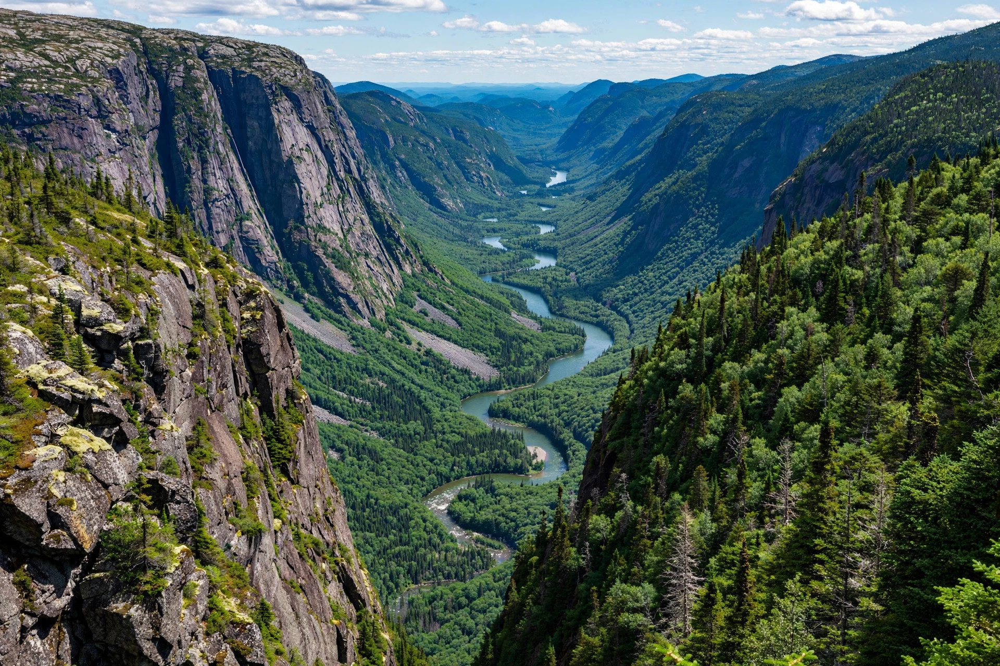

Charlevoix
Cliffs, craters, and culture along the St. Lawrence — where the river starts to feel like the sea.

About 350 million years ago, a meteorite slammed into what is now the north shore of the St. Lawrence, leaving a crater some 50 kilometres across. That crater is Charlevoix. The impact shattered the Canadian Shield into a landscape of abrupt cliffs, deep valleys, and rich soil — and the St. Lawrence, widening toward the sea, laps against it all. Northeast of Quebec City on Route 138, this is where the river road gets dramatic.
Baie-Saint-Paul: the art town
The region's cultural capital sits in a valley where the Rivière du Gouffre meets the St. Lawrence. Baie-Saint-Paul has been an artists' colony for over a century — the Group of Seven painted here — and Rue Saint-Jean-Baptiste is still lined with galleries, working studios, and cafés. It's the natural first stop coming from Quebec City, and the best place in the region to browse, eat, and get your bearings. In late summer the town hosts a well-known visual-arts symposium that fills the streets.
Just east of town, the road climbs toward the high country. Don't rush this stretch: the lookouts over the river, with the far shore of the Bas-Saint-Laurent fading into haze, are among the finest on the entire St. Lawrence.
Hautes-Gorges-de-la-Rivière-Malbaie
Inland from La Malbaie, the Malbaie River has carved one of the deepest gorges east of the Rockies — and Parc national des Hautes-Gorges-de-la-Rivière-Malbaie, run by SEPAQ, protects it. The park's signature is the Acropole des Draveurs, a demanding 10.4-kilometre round-trip climb that gains over 800 metres to a summit staring straight down the gorge. It's one of the great day hikes in Quebec: strenuous, exposed at the top, and absolutely worth it on a clear day.
If the Acropole sounds like too much, the park offers gentler options — the riverside trail, canoe and kayak rentals on the calm upper river, and in winter, some of the province's most serious backcountry ski touring. The park's campground and rustic huts fill fast in summer; book through SEPAQ well ahead.
La Malbaie and the grand-hotel era
Downstream, La Malbaie (and its neighbour Pointe-au-Pic) was the Hamptons of the 19th century — American industrialists built summer estates here, and the grand hotels that served them still define the waterfront. The most famous, the Fairmont Le Manoir Richelieu, sits on a cliff above the river with its golf course rolling down toward the water; even if you don't stay, the terrace view at sunset is worth the stop. The town's casino, housed in the old hotel's former stables complex, draws evening crowds.
Le Massif de Charlevoix
Between Baie-Saint-Paul and La Malbaie, Le Massif rises directly from the St. Lawrence — a ski mountain with the highest vertical drop in Eastern Canada and runs that seem to fall straight into the river. In winter it's a pilgrimage for serious skiers; in summer the mountain runs a scenic gondola, hiking trails, and a famous via ferrata-style cliffside trail. The Train de Charlevoix, a rail excursion running between Quebec City and La Malbaie along the river, stops at the mountain's base in season — one of the most scenic train rides in the country.
Getting there
- From Quebec City: Route 138 northeast along the river — Baie-Saint-Paul is about 90 minutes, La Malbaie about 2 hours.
- The Train de Charlevoix runs seasonally between Quebec City and La Malbaie, stopping at Baie-Saint-Paul and Le Massif.
- Best months: June–October for hiking and the river road; January–March for Le Massif skiing.
- Good to know: whale watching starts further downstream — combine Charlevoix with Tadoussac (see our outdoors guide) for the full St. Lawrence experience.
Isle-aux-Coudres
Worth the ferry detour: this island in the St. Lawrence, reached by a free 15-minute ferry from Saint-Joseph-de-la-Rive, is Charlevoix in miniature — working farms, cider mills, a ring road made for cycling, and views back to the mainland cliffs. Give it half a day, rent a bike at the dock, and circle the island the slow way.